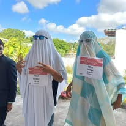
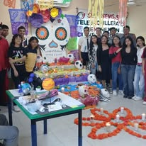
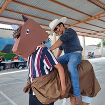

Esta tradiciòn se vive con mucha emociòn porque los alumnos participan en diversas actividades culturales que fomentan el respeto por las costumbres mexicanas.
una de las actividades màs comunes es el concurso de disfraces.Los estudiantes se esmeran para crear esos atuendos que los hagan ganar y aveces unos son tan originales y chistosos para el pùblico.Al final premian a los 3 primeros lugares y es muy divertido.



